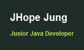

เมื่อจบบทนี้ นิสิตจะทำได้- อธิบาย JFrame, container และ component
- สร้างหน้าต่างและกำหนดการปิด
- เพิ่ม JPanel เป็นพื้นที่จัดกลุ่ม component
- เริ่ม GUI บน Event Dispatch Thread
14. จากผลลัพธ์ใน console สู่หน้าต่าง GUI
GUI (Graphical User Interface) ให้ผู้ใช้เห็นหน้าต่าง ปุ่ม ช่องกรอกข้อมูล และผลลัพธ์ แทนการพิมพ์คำสั่งใน console Swing (แพ็กเกจ javax.swing) เป็นชุด component มาตรฐานใน Java SE สำหรับสร้าง GUI
เกี่ยวกับภาพผลลัพธ์ในบท GUIภาพหน้าต่างทางขวาของทุกตัวอย่างถ่ายจากการรันโค้ดนั้นจริง (ใช้ look and feel มาตรฐานของ Swing ชื่อ Metal) แถบชื่อหน้าต่างวาดเพิ่มให้ดู ถ้ารันบนเครื่องของนิสิต กรอบหน้าต่างจะเป็นแบบของระบบปฏิบัติการ แต่เนื้อหาภายในเหมือนกัน บางตัวอย่างมีภาพ “หลังผู้ใช้กระทำ” ซึ่งได้จากการจำลองพิมพ์/คลิกด้วยโปรแกรม
14.1 หน้าต่าง, container และ component
หน้าจอ GUI ประกอบจากชิ้นส่วนสามระดับ ซ้อนกันเป็นชั้น ๆ
| ระดับ | คลาส | หน้าที่ |
|---|
| หน้าต่าง | JFrame | กรอบนอกสุด มีแถบชื่อและปุ่มปิด |
| container | JPanel | พื้นที่บรรจุและจัดกลุ่ม component |
| component | JLabel, JTextField, JButton … | สิ่งที่มองเห็นหรือโต้ตอบได้ |
แผนผังส่วนประกอบ (component tree)แผนภาพ
JFrame (หน้าต่าง)
└── content pane / JPanel (พื้นที่จัดกลุ่ม)
├── JLabel (ข้อความ)
├── JTextField (ช่องกรอก)
└── JButton (ปุ่มกด)
Console กับ GUI ต่างกันอย่างไร
| Console | GUI |
|---|
| ลำดับการทำงาน | โปรแกรมกำหนด: ถาม → รอ → ถามต่อ | ผู้ใช้กำหนด: คลิก/พิมพ์อะไรก่อนก็ได้ |
| รับข้อมูล | Scanner อ่านทีละบรรทัด | อ่านจาก component เมื่อเกิดเหตุการณ์ |
| แสดงผล | println ต่อท้ายไปเรื่อย ๆ | เปลี่ยนข้อความใน label/area ที่มีอยู่ |
| โครงสร้างโค้ด | main ทำงานจากบนลงล่างจนจบ | main สร้างหน้าต่างแล้วจบ ที่เหลือขับเคลื่อนด้วย event |
เทียบโปรแกรมเดียวกันสองแบบ แบบแรกพิมพ์ข้อความลง console
ตัวอย่าง 14.1.1เวอร์ชัน console
ConsoleGreeting.java
public class ConsoleGreeting {
public static void main(String[] args) {
String name = "JHope";
System.out.println("Welcome to Java GUI course"); // ต่อท้ายใน console
System.out.println("Student: " + name);
}
}
ผลลัพธ์Welcome to Java GUI course
Student: JHope
แบบที่สองแสดงข้อความเดียวกันในหน้าต่าง: สร้าง JFrame → สร้าง JPanel → ใส่ JLabel ลง panel → ใส่ panel ลงหน้าต่าง → แสดง
ตัวอย่าง 14.1.2เวอร์ชัน GUI
GuiGreeting.java
import javax.swing.*; // * = ทุกคลาสในแพ็กเกจ swing
public class GuiGreeting {
public static void main(String[] args) {
SwingUtilities.invokeLater(() -> { // สร้าง GUI บน EDT (หัวข้อ 14.4)
JFrame frame = new JFrame("Greeting"); // ชื่อบนแถบหัว
frame.setDefaultCloseOperation(JFrame.EXIT_ON_CLOSE); // ปิดหน้าต่าง = จบโปรแกรม
JPanel panel = new JPanel();
panel.add(new JLabel("Welcome to Java GUI course"));
panel.add(new JLabel("Student: JHope"));
frame.add(panel); // วาง panel ลงหน้าต่าง
frame.pack(); // ขนาดพอดีเนื้อหา
frame.setVisible(true); // แสดง (เรียกท้ายสุด)
});
}
}
หน้าต่างที่ได้ (ภาพจากโปรแกรมจริง) คำแนะนำmain จบทันทีหลังสร้างหน้าต่าง แต่หน้าต่างยังเปิดอยู่จนกว่าผู้ใช้จะปิด
ลองคิดก่อน · บทบาทในหน้าจอ login: กรอบหน้าต่าง, พื้นที่จัดกลุ่ม, คำว่า “Username”, ช่องพิมพ์ชื่อ, ปุ่ม Login ตรงกับคลาสใดของ Swing
ดูคำตอบ
JFrame, JPanel, JLabel, JTextField, JButton ตามลำดับ
14.2 สร้าง JFrame และกำหนดวงจรชีวิต
ทุกโปรแกรม GUI เปิดหน้าต่างด้วยขั้นตอนเดียวกัน
ลำดับการเปิดหน้าต่าง- สร้าง
new JFrame("ชื่อหน้าต่าง") - กำหนดการปิด
setDefaultCloseOperation(JFrame.EXIT_ON_CLOSE) - เพิ่ม content และ component
- กำหนดขนาด:
setSize(w, h) หรือ pack() - วางตำแหน่ง
setLocationRelativeTo(null) (กลางจอ) - เรียก
setVisible(true) เป็นขั้นสุดท้าย
ตัวอย่าง 14.2.1หน้าต่างว่างด้วย setSize
FirstWindow.java
import javax.swing.JFrame; // import ทีละคลาสก็ได้
import javax.swing.SwingUtilities;
public class FirstWindow {
public static void main(String[] args) {
SwingUtilities.invokeLater(() -> {
JFrame frame = new JFrame("My First GUI");
frame.setDefaultCloseOperation(JFrame.EXIT_ON_CLOSE);
frame.setSize(360, 160); // กว้าง 360 สูง 160 พิกเซล (รวมขอบ)
frame.setLocationRelativeTo(null); // null = กึ่งกลางจอ
frame.setVisible(true);
});
}
}
หน้าต่างที่ได้ (ภาพจากโปรแกรมจริง) ลืม EXIT_ON_CLOSEค่าเริ่มต้นคือ HIDE_ON_CLOSE กดปิดแล้วหน้าต่างแค่ถูกซ่อน โปรแกรมยังทำงานค้างอยู่เบื้องหลัง
setSize หรือ pack()
setSize กำหนดขนาดตายตัว ส่วน pack() ถามขนาดที่ component ข้างในต้องการ แล้วปรับหน้าต่างให้พอดี จึงไม่ตัดข้อความแม้ฟอนต์ของแต่ละเครื่องต่างกัน
ตัวอย่าง 14.2.2หน้าต่างที่พอดีเนื้อหา
PackDemo.java
import javax.swing.*;
public class PackDemo {
public static void main(String[] args) {
SwingUtilities.invokeLater(() -> {
JFrame frame = new JFrame("Packed");
frame.setDefaultCloseOperation(JFrame.EXIT_ON_CLOSE);
JPanel panel = new JPanel();
panel.add(new JLabel("This window is exactly as big as its content."));
frame.add(panel);
frame.pack(); // เรียกหลัง add ครบทุกตัว
frame.setLocationRelativeTo(null);
frame.setVisible(true);
});
}
}
หน้าต่างที่ได้ (ภาพจากโปรแกรมจริง) คลาสที่สืบทอด JFrame
โปรแกรมที่ใหญ่ขึ้นนิยมสร้างคลาสหน้าต่างเองด้วย extends JFrame (inheritance จากบทที่ 12) แล้วจัดหน้าจอใน constructor เรียก setSize, add ได้ตรง ๆ เพราะเป็นเมธอดที่สืบทอดมา
ตัวอย่าง 14.2.3ProfileWindow
ProfileWindow.java
import javax.swing.*;
public class ProfileWindow extends JFrame { // คลาสนี้คือหน้าต่าง
public ProfileWindow(String student) {
super("Student Profile"); // ส่งชื่อหน้าต่างให้ JFrame
setDefaultCloseOperation(JFrame.EXIT_ON_CLOSE);
JPanel panel = new JPanel();
panel.add(new JLabel("Name: " + student)); // รับข้อมูลผ่าน constructor
panel.add(new JLabel("Faculty: Science"));
add(panel); // add ของตัวเอง
setSize(320, 100);
setLocationRelativeTo(null);
}
public static void main(String[] args) {
SwingUtilities.invokeLater(() -> new ProfileWindow("JHope").setVisible(true));
}
}
หน้าต่างที่ได้ (ภาพจากโปรแกรมจริง) ค่าที่ใช้กับ setDefaultCloseOperation
| ค่า | ผลเมื่อกดปิด | ใช้กับ |
|---|
EXIT_ON_CLOSE | ปิดหน้าต่างและจบโปรแกรม | หน้าต่างหลัก |
DISPOSE_ON_CLOSE | ปิดเฉพาะหน้าต่างนี้ | หน้าต่างรอง (บทที่ 18) |
HIDE_ON_CLOSE | ซ่อน แต่โปรแกรมยังทำงาน (ค่าเริ่มต้น) | มักเป็นบั๊กของผู้เริ่มต้น |
ลองคิดก่อน · ลำดับถ้าเรียก setVisible(true) ก่อน add(panel) และไม่เรียก pack() อาจเกิดอะไรขึ้น
ดูคำตอบ
หน้าต่างอาจแสดงว่างหรือขนาดผิด เพราะ component ถูกเพิ่มหลังจากหน้าต่างคำนวณ layout ไปแล้ว — จึงควรตั้งค่าทุกอย่างก่อน setVisible(true) (ถ้าจำเป็นต้องเพิ่มทีหลังให้เรียก revalidate() และ repaint())
14.3 JPanel เป็น container สำหรับ component
ใส่ component ลง panel แล้วใส่ panel ลงหน้าต่าง แต่ละ container มี layout manager คอยจัดตำแหน่งให้ JPanel ใช้ FlowLayout เป็นค่าเริ่มต้น: เรียงซ้ายไปขวาตามลำดับที่ add และขึ้นบรรทัดใหม่เมื่อเต็ม (layout อื่นอยู่ในบทที่ 15)
ตัวอย่าง 14.3.1หลาย component ใน panel เดียว
LoginPanel.java
import javax.swing.*;
public class LoginPanel {
public static void main(String[] args) {
SwingUtilities.invokeLater(() -> {
JFrame frame = new JFrame("Login");
frame.setDefaultCloseOperation(JFrame.EXIT_ON_CLOSE);
JPanel panel = new JPanel(); // FlowLayout: ซ้าย → ขวา
panel.add(new JLabel("Username:")); // ลำดับ add = ลำดับบนจอ
panel.add(new JTextField(10)); // กว้างประมาณ 10 ตัวอักษร
panel.add(new JButton("Login"));
frame.add(panel);
frame.pack();
frame.setVisible(true);
});
}
}
หน้าต่างที่ได้ (ภาพจากโปรแกรมจริง)Login

คำแนะนำตอนนี้กดปุ่มแล้วยังไม่มีอะไรเกิดขึ้น บทที่ 16 จะเพิ่มการตอบสนองต่อ event
ตกแต่ง: สี ขอบ และฟอนต์
| เมธอด | ตัวอย่าง |
|---|
setBackground(color) | new Color(229, 244, 207) ค่า R, G, B 0–255 |
setForeground(color) | สีตัวอักษร เช่น Color.WHITE |
setFont(font) | new Font("SansSerif", Font.BOLD, 22) (PLAIN, BOLD, ITALIC) |
setBorder(border) | BorderFactory.createEmptyBorder(บน, ซ้าย, ล่าง, ขวา) |
ตัวอย่าง 14.3.2panel สีเขียวอ่อนกับหัวข้อตัวหนา
StyledPanel.java
import javax.swing.*;
import java.awt.*; // Color, Font อยู่ใน java.awt
public class StyledPanel {
public static void main(String[] args) {
SwingUtilities.invokeLater(() -> {
JFrame frame = new JFrame("Styled");
frame.setDefaultCloseOperation(JFrame.EXIT_ON_CLOSE);
JPanel panel = new JPanel();
panel.setBackground(new Color(229, 244, 207));
panel.setBorder(BorderFactory.createEmptyBorder(16, 24, 16, 24)); // ระยะขอบด้านใน
JLabel title = new JLabel("Java Cafe");
title.setFont(new Font("SansSerif", Font.BOLD, 22));
title.setForeground(new Color(8, 125, 134));
panel.add(title);
frame.add(panel);
frame.pack();
frame.setVisible(true);
});
}
}
หน้าต่างที่ได้ (ภาพจากโปรแกรมจริง)Styled

panel ซ้อน panel
แบ่งหน้าจอเป็นส่วน ๆ ด้วย panel หลายตัว แต่ละส่วนตกแต่งแยกกันได้ ตัวอย่างนี้วาง panel หัวไว้ด้านบน (BorderLayout.NORTH) และ panel เนื้อหาไว้ตรงกลาง (CENTER) ของหน้าต่าง
ตัวอย่าง 14.3.3ส่วนหัวกับส่วนเนื้อหา
NestedPanels.java
import javax.swing.*;
import java.awt.*;
public class NestedPanels {
public static void main(String[] args) {
SwingUtilities.invokeLater(() -> {
JFrame frame = new JFrame("Course Card");
frame.setDefaultCloseOperation(JFrame.EXIT_ON_CLOSE);
JPanel header = new JPanel(); // ส่วนหัว: พื้นเข้ม ตัวอักษรขาว
header.setBackground(new Color(32, 44, 40));
JLabel title = new JLabel("CS101 Programming");
title.setForeground(Color.WHITE);
header.add(title);
JPanel body = new JPanel(); // ส่วนเนื้อหา
body.add(new JLabel("Credits: 3"));
body.add(new JLabel("Seats: 40"));
body.add(new JButton("Enroll"));
frame.add(header, BorderLayout.NORTH); // แถบบน
frame.add(body, BorderLayout.CENTER); // พื้นที่หลัก
frame.pack();
frame.setVisible(true);
});
}
}
หน้าต่างที่ได้ (ภาพจากโปรแกรมจริง)Course Card

ลองคิดก่อน · FlowLayoutถ้าหน้าต่าง FlowLayout แคบเกินไปสำหรับ component ทั้งหมดในแถวเดียว จะเกิดอะไรขึ้น
ดูคำตอบ
component ที่ไม่พอจะถูกย้ายไปบรรทัดถัดไป (wrap) — ถ้าหน้าต่างสูงไม่พอก็จะมองไม่เห็นบางส่วน จึงควรใช้ pack() หรือ layout ที่เหมาะสม
14.4 Event Dispatch Thread (EDT)
Swing มี thread พิเศษชื่อ Event Dispatch Thread (EDT) ทำหน้าที่วาดหน้าจอและรับเหตุการณ์ทั้งหมด ทุกการสร้างและแก้ไข component ต้องทำบน EDT เพราะ Swing ไม่ปลอดภัยเมื่อถูกใช้จากหลาย thread พร้อมกัน
วิธีมาตรฐานคือห่อโค้ดสร้าง GUI ด้วย SwingUtilities.invokeLater(() -> { ... }); ซึ่งส่ง “งาน” ไปเข้าคิวของ EDT
invokeLater ทำอะไรแผนภาพ
main thread Event Dispatch Thread
─────────── ─────────────────────
main() เริ่ม
invokeLater(งานสร้าง GUI) ──────▶ คิวงาน: [สร้าง GUI]
main() จบ ทำ "สร้าง GUI" → แสดงหน้าต่าง
รอ event: คลิก, พิมพ์, วาดใหม่ ...
() -> { ... } คือ lambda หรือ “งานชิ้นหนึ่ง” ที่ส่งให้ EDT ทำภายหลัง (บทที่ 16)
ตัวอย่าง 14.4.1ดูชื่อ thread ที่ทำงาน
WhichThread.java
import javax.swing.*;
public class WhichThread {
public static void main(String[] args) {
String mainThread = Thread.currentThread().getName(); // "main"
SwingUtilities.invokeLater(() -> {
String edt = Thread.currentThread().getName(); // "AWT-EventQueue-0" = EDT
JFrame frame = new JFrame("Threads");
frame.setDefaultCloseOperation(JFrame.EXIT_ON_CLOSE);
JPanel panel = new JPanel();
panel.add(new JLabel("main ran on: " + mainThread));
panel.add(new JLabel("GUI built on: " + edt));
panel.add(new JLabel("isEDT = " + SwingUtilities.isEventDispatchThread())); // true
frame.add(panel);
frame.setSize(260, 110); // แคบ → FlowLayout ตัดบรรทัด
frame.setVisible(true);
});
}
}
หน้าต่างที่ได้ (ภาพจากโปรแกรมจริง) โครงโปรแกรม GUI มาตรฐาน
แยกการสร้างหน้าต่างไว้ในเมธอด createAndShowGui() และแยกการจัดเนื้อหาไว้ใน buildContent() แล้วให้ main เรียกผ่าน invokeLater โครงนี้ใช้ได้กับทุกบทถัดไป
ตัวอย่าง 14.4.2GuiTemplate
GuiTemplate.java
import javax.swing.*;
import java.awt.*;
public class GuiTemplate {
public static void main(String[] args) {
SwingUtilities.invokeLater(GuiTemplate::createAndShowGui); // method reference: สั้นกว่า lambda
}
private static void createAndShowGui() { // ตั้งค่าหน้าต่าง
JFrame frame = new JFrame("App Template");
frame.setDefaultCloseOperation(JFrame.EXIT_ON_CLOSE);
frame.setContentPane(buildContent()); // ใช้ panel ของเราเป็นเนื้อหา
frame.pack();
frame.setLocationRelativeTo(null);
frame.setVisible(true);
}
private static JPanel buildContent() { // จัดหน้าตา
JPanel panel = new JPanel(new BorderLayout(8, 8)); // เว้นระยะ 8 พิกเซล
panel.setBorder(BorderFactory.createEmptyBorder(12, 12, 12, 12));
panel.add(new JLabel("Header goes here"), BorderLayout.NORTH);
panel.add(new JTextArea("Main content area", 4, 24), BorderLayout.CENTER); // 4 แถว 24 คอลัมน์
panel.add(new JButton("Action"), BorderLayout.SOUTH);
return panel;
}
}
หน้าต่างที่ได้ (ภาพจากโปรแกรมจริง)App Template

งานหนักห้ามทำบน EDTถ้าโค้ดบน EDT ทำงานนาน เช่น ลูปคำนวณหลายวินาที หรือ Thread.sleep หน้าต่างจะค้าง กดอะไรไม่ได้ เพราะ EDT ไม่ว่างวาดหน้าจอ บทเสริม “Timer, Thread และ Swing” อธิบายวิธีแก้ด้วย Swing Timer และ SwingWorker
แบบฝึกหัดท้ายบท
ทุกข้อเป็นโปรแกรม GUI ให้รันแล้วเทียบหน้าต่างกับภาพตัวอย่าง (ขนาดและฟอนต์อาจต่างเล็กน้อยตามเครื่อง) ทุกโปรแกรมต้องสร้าง GUI ใน SwingUtilities.invokeLater
ระดับความยาก: ★ ง่าย★★ ปานกลาง★★★ ท้าทาย
Exercise 14.1หน้าต่าง Student Profile★ ง่าย
สร้างหน้าต่างชื่อ Student Profile ขนาด 400 × 150 เปิดกลางจอ และปิดแล้วจบโปรแกรม ภายในมีข้อความ Name: (ชื่อของคุณ)
สิ่งที่ต้องทำ- ใช้ setSize, setLocationRelativeTo(null), EXIT_ON_CLOSE
- ใส่ JLabel ผ่าน JPanel
ตัวอย่างหน้าจอ (ภาพจากโปรแกรมเฉลย)
Exercise 14.2ป้ายข้อความสามบรรทัดด้วย pack()★ ง่าย
สร้างหน้าต่าง About ที่มี JLabel 3 ตัว: ชื่อโปรแกรม, เวอร์ชัน และผู้พัฒนา ใช้ pack() แทน setSize และสังเกตว่า FlowLayout วางข้อความในแถวเดียวกัน
สิ่งที่ต้องทำ- ใช้ JPanel ค่าเริ่มต้น (FlowLayout)
- เรียก pack() หลัง add ทั้งหมด
- ตอบคำถาม: ถ้าอยากให้อยู่คนละบรรทัดต้องทำอย่างไร (ดูเฉลย)
ตัวอย่างหน้าจอ (ภาพจากโปรแกรมเฉลย)
Exercise 14.3หน้าต่างล็อกอิน (ยังไม่ทำงาน)★ ง่าย
สร้างหน้าต่าง Login ที่มี JLabel “Username:”, JTextField กว้าง 12, JLabel “Password:”, JPasswordField กว้าง 12 และปุ่ม Sign in ปรับความกว้างหน้าต่างให้ช่องเรียงเป็น 2 แถวตามภาพ
สิ่งที่ต้องทำ- JPasswordField แสดงจุดแทนตัวอักษร
- ใช้ setSize ให้แคบพอที่ FlowLayout จะตัดขึ้นแถวใหม่ (ประมาณ 300 × 130)
- ยังไม่ต้องมี event
ตัวอย่างหน้าจอ (ภาพจากโปรแกรมเฉลย)
Exercise 14.4นามบัตรแบบมีสี★★ ปานกลาง
สร้างหน้าต่าง Business Card ที่มีพื้นหลังสีเข้ม (เช่น RGB 32, 44, 40) ชื่อเป็นตัวหนาขนาด 20 สีขาว และตำแหน่งงานสีเขียวอ่อน มีระยะขอบภายใน 20 พิกเซลทุกด้าน
สิ่งที่ต้องทำ- ใช้ setBackground, setForeground, setFont, BorderFactory.createEmptyBorder
- จัดชื่อและตำแหน่งให้อยู่คนละบรรทัดด้วย
new JPanel(new GridLayout(2, 1)) - ใช้ pack()
ตัวอย่างหน้าจอ (ภาพจากโปรแกรมเฉลย)Business Card

Exercise 14.5หน้าต่างจากคลาสที่สืบทอด JFrame★★ ปานกลาง
สร้างคลาส MessageWindow extends JFrame ที่ constructor รับชื่อหน้าต่างและข้อความ แล้วแสดงข้อความนั้นในหน้าต่างขนาดพอดี (pack) ใน main สร้างหน้าต่าง 2 บานจากคลาสเดียวกัน วางตำแหน่งไม่ให้ซ้อนกันด้วย setLocation(x, y)
สิ่งที่ต้องทำ- เรียก super(title) ใน constructor
- หน้าต่างแรกที่ (100, 100) หน้าต่างที่สองที่ (100, 220)
- ทั้งสองใช้ EXIT_ON_CLOSE (ปิดบานใดก็จบโปรแกรม)
ตัวอย่างหน้าจอ (ภาพจากโปรแกรมเฉลย)Reminder

Tip

Exercise 14.6หน้าต่างแบ่ง 3 ส่วน★★ ปานกลาง
สร้างหน้าต่าง Dashboard ที่แบ่งเป็น 3 ส่วนด้วย panel: ส่วนหัว (NORTH) พื้นสีเข้มมีชื่อแอป, ส่วนกลาง (CENTER) มีข้อความ “Welcome back!”, ส่วนล่าง (SOUTH) มีปุ่ม 3 ปุ่ม: Home, Reports, Settings
สิ่งที่ต้องทำ- ใช้ BorderLayout ของ content pane
- แต่ละส่วนเป็น JPanel ของตัวเอง
- หน้าต่างกว้างประมาณ 360
ตัวอย่างหน้าจอ (ภาพจากโปรแกรมเฉลย)Dashboard

Exercise 14.7ตารางเวลาเรียนจากอาเรย์★★★ ท้าทาย
มีอาเรย์ String[] days และ String[] subjects (5 วัน) ให้สร้างหน้าต่างที่แสดงตาราง 2 คอลัมน์ด้วย GridLayout(0, 2) โดยสร้าง JLabel ด้วยลูป หัวตารางเป็นตัวหนา และแถววันเสาร์อาทิตย์ (ถ้ามี) เป็นสีแดง
สิ่งที่ต้องทำ- ข้อมูลอยู่ในอาเรย์ ไม่เขียน label ทีละบรรทัด
- หัวตาราง “Day” และ “Subject” ใช้ Font.BOLD
- เว้นระยะระหว่างช่องด้วย GridLayout(0, 2, 12, 4)
- ใส่ EmptyBorder รอบ panel
ตัวอย่างหน้าจอ (ภาพจากโปรแกรมเฉลย)Timetable

Exercise 14.8ปุ่มตัวเลขแบบเครื่องคิดเลข★★★ ท้าทาย
สร้างหน้าต่าง Keypad ที่มีช่องแสดงผล (JTextField ไม่ให้แก้ไขด้วย setEditable(false) ชิดขวา) ด้านบน และปุ่ม 16 ปุ่มในตาราง 4 × 4: 7 8 9 /, 4 5 6 *, 1 2 3 -, 0 . = + สร้างปุ่มด้วยลูปจากอาเรย์ String และทำปุ่ม = ให้มีสีพื้นต่างจากปุ่มอื่น
สิ่งที่ต้องทำ- ช่องแสดงผลอยู่ NORTH, ตารางปุ่มอยู่ CENTER
- ใช้
GridLayout(4, 4, 4, 4) - ตั้งข้อความเริ่มต้นในช่องเป็น 0 ชิดขวาด้วย
setHorizontalAlignment(JTextField.RIGHT) - ยังไม่ต้องทำให้ปุ่มคำนวณได้ (ทำในบทที่ 16)
ตัวอย่างหน้าจอ (ภาพจากโปรแกรมเฉลย)Keypad